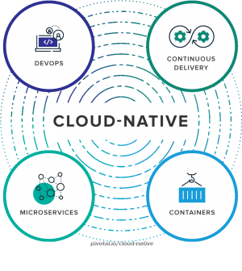
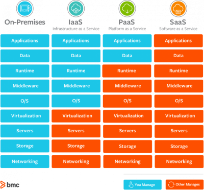
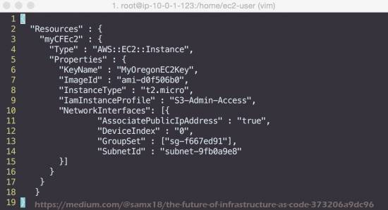

Navigation
Overviews
Comparisons
Overviews
Comparisons
A collective of online computation services that, together, deliver a defined result.

An automation-centered development workflow focused on regular code integration and regular deployment to the end user.

Online software, storage, and compute services used as an alternative to on-premises solutions for the same functions.

High availability is a system's–or a part of a system's–ability to perpetually guarantee a specific level of operational performance, with minimal downtime.
Infrastructure as Code, or IaC, is the use of descriptive files to manage and deploy infrastructure (networking, load balancers, VMs, etc.), as opposed to physically configuring the infrastructure or using configuration software.
